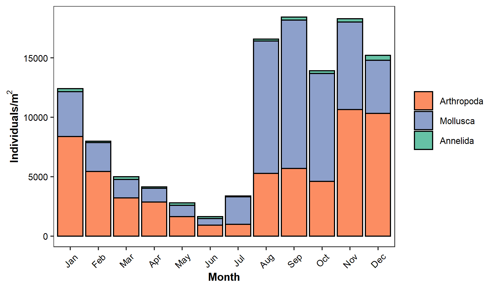
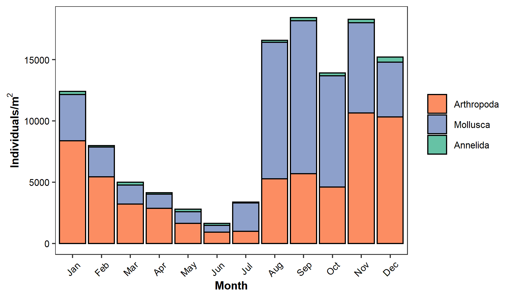
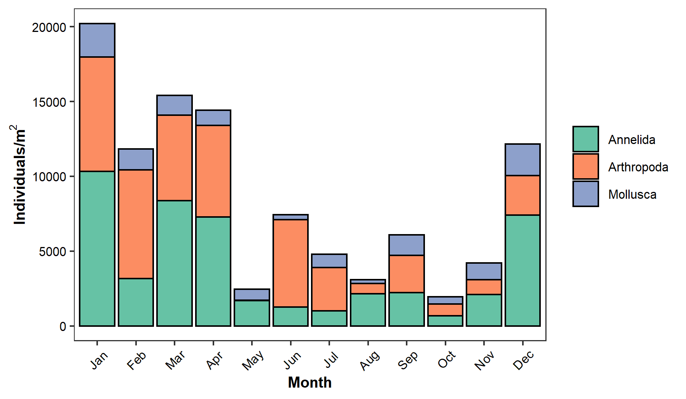
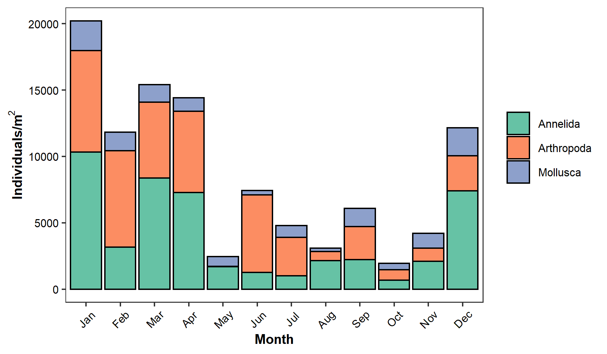
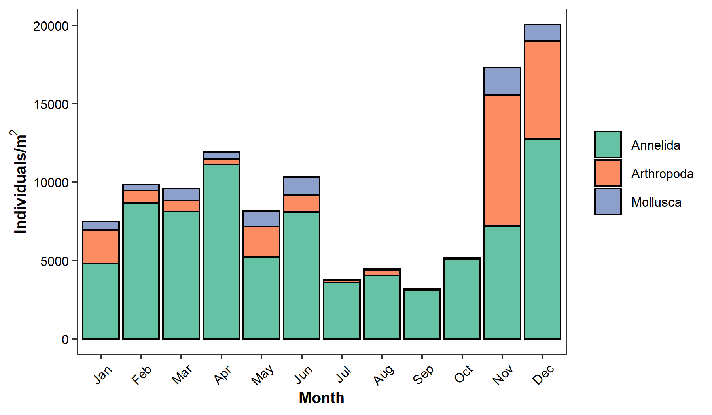
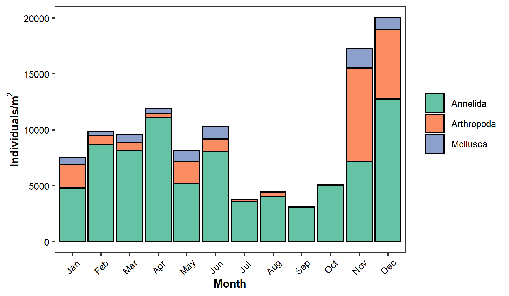

Program Information
THIS IS A TEST SITE! For official annual EMP reports, please contact Sarah Perry at sarah.perry@water.ca.gov.
The State Water Resources Control Board (SWRCB) sets water quality objectives to protect beneficial uses of water in the Sacramento-San Joaquin Delta and Suisun and San Pablo Bays. These objectives are met by establishing standards mandated in water right permits issued to the Department of Water Resources and U.S. Bureau of Reclamation by the SWRCB. The standards include minimum Delta outflows, limits to Delta water export by the State Water Project (SWP) and the Central Valley Project (CVP), and maximum allowable salinity levels.
In 1971, the State Water Resources Control Board (SWRCB) established Water Right Decision 1379 (D-1379). This Decision contained new water quality requirements for the San Francisco Bay-Delta Estuary. D-1379 was also the first water right decision to provide terms and conditions for a comprehensive monitoring program to routinely determine water quality conditions and changes in environmental conditions within the estuary. The monitoring program described in D-1379 was developed by the Stanford Research Institute through a contract with the SWRCB. Implementation of the monitoring program began in 1972, as SWRCB, DWR, and USBR met to define their individual responsibilities for various elements of the monitoring program. In 1978, amendments to water quality standards were implemented and resulted in Water Right Decision 1485 (D-1485). These standards were again amended under the 1995 Water Quality Control Plan and Water Right Decision 1641 (D-1641) established in 1999. The SWP and CVP are currently operated to comply with the monitoring and reporting requirements described in D-1641. D-1641 requires DWR and USBR to conduct a comprehensive environmental monitoring program to determine compliance with the water quality standards and also to submit an annual report to the SWRCB discussing data collected.
More information about EMP and its connection to the Interagency Ecological Program (IEP) can be found here.

(#fig:unnamed-chunk-3)Map of the Sacramento-San Joaquin Delta. Source: DWR
Discrete Water Quality
Background
There are 24 fixed discrete stations within the San Francisco Estuary that are monitored at high water slack tide. The stations are primarily accessed by the Research Vessel Sentinel, or vehicle transport. Discrete sampling is completed once a month due to the intensity of collecting a wide collection of physical parameters (e.g. water temperature) and grab samples for laboratory analysis (e.g. nitrogen and phosphorous). The data from the discrete sampling is helpful to document long-term changes within the estuary.
Analytes
EMP collects data on x different analytes. The ones highlighted in this report are:
- Specific Conductance
- Turbidity
- Dissolved Ammonia
- Chlorophyll a
- Dissolved Nitrate+Nitrite
- Total Phosphorus
Sites
To analyze discrete water quality trends from 2019, the EMP stations were grouped into six regions of the San Francisco Bay-Delta estuary: San Pablo Bay, Suisun and Grizzly Bay, Confluence, Central Delta, Southern Interior Delta, and Northern Interior Delta. Their locations are displayed below.

(#fig:unnamed-chunk-4)Map of EMP’s field sites.
Current Report
Introduction
Water year 2019 was classified as Above Average in the Sacramento Valley and San Joaquin Valley, unlike the previous year, which was classified as Below Average. More information about water year types can be found on the hydrology page. The 2018-2019 data from all stations within the same region were plotted on one graph and then combined with the graphs from other regions to make a facet graph for each parameter. The minimum and maximum values in 2019 were determined for each field parameter or laboratory analyte to show the range within a single year. The instances when a result fell below the reporting limit were excluded from these minimum and maximum calculations. When this occurred, a vertical dashed line capped at the reporting limit was added to the graph to represent the presence of a non-detect.
Specific Conductance
Specific conductance varied greatly in 2019 across the sampling regions with the highest levels occurring in the western regions (San Pablo Bay, Suisun Bay and Grizzly Bay and Confluence) where water from the Pacific Ocean has the strongest influence. Specific conductance ranged from 77.8 µS/cm (C10A in Southern Interior Delta, June) to 41,956 µS/cm (D41 in San Pablo Bay, November) during 2019. Lower specific conductance values were seen in 2019 than compared to 2018, which was likely due to increased precipitation and runoff during a wet year, keeping the San Francisco Estuary fresher throughout the year.

(#fig:unnamed-chunk-6)Surface specific conductance in µS/cm at six regions in the San Francisco Bay-Delta estuary during 2018-2019.
Turbidity
Turbidity values ranged from 0.3 NTU (MD10A in Southern Interior Delta, April) to 142.3 NTU (NZ325 in San Pablo Bay, February) during 2019. The year 2019 had much higher levels of turbidity than in 2018, especially during the winter months in the northern and western regions when rain and snowpack runoff occurred more frequently and to a much larger degree in the watershed. All six regions experienced a spike in turbidity in February 2019 when the first set of big storms hit, causing higher flows throughout the estuary and therefore a higher likelihood of increased sediment disturbance.

(#fig:unnamed-chunk-7)Surface turbidity in NTU at six regions in the San Francisco Bay-Delta estuary during 2018-2019.
Dissolved Ammonia
Dissolved ammonia levels in 2019 ranged from ≤ 0.05 mg/L (which is the reporting limit) to 0.75 mg/L (C3A in Northern Interior Delta, November). Dissolved ammonia levels are typically higher at C3A in the Northern Interior Delta due to its location downstream of the effluent discharge from Sacramento Regional Sanitation District. Ammonia levels are typically lower throughout the Delta and Bays, likely due to dilution and nitrification. More non-detects were seen in 2019 compared to 2018, but this was in fact due to the reporting limit increasing from 0.01 mg/L to 0.05 mg/L and was not necessarily a product of lower concentrations.
(#fig:unnamed-chunk-8)Dissolved ammonia concentrations in mg/L at six regions in the San Francisco Bay-Delta estuary during 2018-2019. Dashed lines represent the range of possible values for months where the raw value was a non-detect.
Chlorophyll a
Chlorophyll a values in 2019 ranged from ≤ 0.5 µg/L (which is the reporting limit) to 38.1 µg/L (C10A in Southern Interior Delta, July). The highest levels of chlorophyll a were seen in the Southern Interior Delta region during the summer months in 2019. This was mostly due to elevated levels at station C10A, which is known for being shallow during dry periods of the year (as low as 3.5 feet in 2019), with increased temperatures and lower flows allowing for increased phytoplankton production. These elevated chlorophyll a levels in the summer at C10A also align with the continuous fluorescence data collected at this station. More information about the phytoplankton genera is described in the phytoplankton section. Chlorophyll levels were consistently lower in 2019 than 2018 for all regions, as most regions saw a spike in chlorophyll in Spring 2018 that did not occur in 2019.

(#fig:unnamed-chunk-9)Chlorophyll a concentrations in µg/L at six regions in the San Francisco Bay-Delta estuary during 2018-2019. Dashed lines represent the range of possible values for months where the raw value was a non-detect.
Dissolved Nitrate + Nitrite
Dissolved nitrate + nitrite values ranged from ≤ 0.05 mg/L (which is the lowest reporting limit) to 3.6 mg/L (P8 in Southern Interior Delta, January) in 2019. The Southern Interior Delta region had the highest fluctuation of dissolved nitrate + nitrite concentrations and had the highest levels compared to the rest of the estuary, likely due to influence from nearby agricultural land use and wastewater treatment effluent. Most regions saw a spike in dissolved nitrate + nitrite in late 2018 to early 2019, but all regions saw less variability in 2019 compared to 2018. Reporting limits for dissolved nitrate + nitrate were as high as 7.5 and 15 mg/L for western regions in late 2019 due to chloride influence on the analytical method. These reporting limits were cropped out of graphs for scale. The dissolved nitrate + nitrite values for D4 in January and D10 in November were removed from the graphs because they were outliers.

(#fig:unnamed-chunk-10)Dissolved nitrate and nitrite concentrations in mg/L at six regions in the San Francisco Bay-Delta estuary during 2018-2019. Dashed lines represent the range of possible values for months where the raw value was a non-detect.
Total Phosphorus
In 2019, total phosphorous levels ranged from 0.04 mg/L (C3A in Northern Interior Delta-June, NZ068 in Northern Interior Delta-May, and D19 in Central Delta-May, D22 in Confluence-July) to 0.37 mg/L (P8 in Southern Interior Delta, January). Total phosphorus concentrations were similar in 2019 compared to 2018 in most regions except for the Southern Interior Delta, which experienced lower levels in 2019. This was likely due to increased precipitation and more water moving through the system causing dilution. The total phosphorus value for NZ002 in April was removed from the graph because it was an outlier.

(#fig:unnamed-chunk-11)Total phosphorous concentrations in mg/L at six regions in the San Francisco Bay-Delta estuary during 2018-2019. Dashed lines represent the range of possible values for months where the raw value was a non-detect.
Data and Contact Info
Data
EMP’s discrete water quality data sets are available publically via the Environmental Data Initiative (EDI) here.
Archived Reports
Archived annual reports can be found here (link currently broken).
Contact Information
For questions related to EMP’s discrete water quality data sets, please contact Morgan Martinez at morgan.martinez@water.ca.gov.
Benthic
Background
Benthic organisms are creatures that live at the bottom of water bodies. This includes invertebrates (animals without backbones) like clams, shrimp, crabs, worms, aquatic insects, and small crustaceans called amphipods. Some benthic organisms live in or on the soft mud of the San Francisco Estuary, while others attach themselves to rocks and other hard surfaces. There are also benthic vertebrates (animals with backbones) that include various fish species.
Benthic organisms are a central part of the estuarine food web, consuming and consumed by other creatures. Every winter during low-tides, thousands of migrating shorebirds feast upon uncovered clams, crabs, and worms found in the mudflats. Humans can also take advantage of the low tides to harvest these organisms. Certain fish species, including juvenile salmon, striped bass, and sturgeon, also consume many types of benthic organisms.
A large percentage of the benthic organisms found in the San Francisco Estuary are non-native, and some of these species can have negative effects on the health of the estuary. For example, non-native clams can filter out much of the available phytoplankton, outcompeting the zooplankton who in turn are major sources of fish food. Historically, shrimp supported a large commercial fishery in San Francisco Estuary, and California’s commercial Dungeness crab fishery still depends upon crabs that spend the first two years of their life growing in the San Francisco Estuary.
Changes in benthic organisms’ populations can be indications of larger changes in the physical conditions and water quality of the San Francisco Estuary, including alterations in pollution levels, freshwater inflows, salinity, and sediment composition.
Monitoring
The Environmental Monitoring Program (EMP) has been sampling benthic invertebrates in the San Francisco Estuary since 1975. The benthic monitoring program is one element of DWR’s and USBR’s Environmental Monitoring Program (EMP) conducted under the Interagency Ecological Program (IEP) umbrella. The EMP also includes monitoring of water quality, zooplankton and phytoplankton. The overall objective of the benthic monitoring program is to determine the impacts of water project operations on the estuary. These impacts are interpreted by changes in benthic fauna presence, abundance and distribution associated physical factors in the estuary. Data collected from the benthic monitoring program is also used to detect newly introduced species in the estuary.
Geographic coverage of the sampling sites ranges from San Pablo Bay east through the upper Estuary to the mouths of the Sacramento, Mokelumne and San Joaquin rivers (see Figure 1). The study area currently comprises ten sites that are sampled monthly. These sites represent a wide variety of habitats that vary in size and physical make-up as well as water quality and sediment composition. The aquatic habitats sampled range from narrow, freshwater channels in the Delta to broad, estuarine bays. The mixing of river water with tidal water creates a wide range of water quality conditions. For example, salinity ranges from freshwater to around 29 ppt in the most western sites.
A 0.052 m2 Ponar dredge is used to sample the benthic sediment, and all organisms larger than 0.5 mm are identified and enumerated by taxonomy contractors. To date, 414 species in ten phyla (Cnidaria, Platyhelminthes, Nemertea, Nematoda, Annelida, Arthropoda, Mollusca, Chordata, Phoronida and Echinodermata) have been collected from the study area. Sediment composition data are also collected as part of the benthic monitoring program to document general trends in sediment composition for all sites where benthic samples are collected.
All Sites
EMP has been collecting benthos data since 1975. The locations of all sites, current and historic, are displayed below.

(#fig:unnamed-chunk-12)Map of EMP’s benthic field sites (past and current).
Current Report
Introduction
Benthic monitoring by the Environmental Monitoring Program is conducted monthly at 10 sampling sites distributed throughout several estuarine regions from San Pablo Bay upstream through the Sacramento-San Joaquin Delta. 2019 was designated a “Wet” water year for both the Sacramento Valley and San Joaquin Valley. Benthic communities in 2019 were expected be similar to previous “Wet” years (2011 and 2017) and differ from drier years both in species composition and in species abundances.

(#fig:unnamed-chunk-13)Map of EMP’s current benthic field sites.
San Pablo Bay
The most saline of our sites, D41 and D41A, are polyhaline sites in San Pablo Bay. At D41 in 2019, the most numerous species was the non-native clam Potamocorbula amurensis, whose density peaked in July to 12,587 individuals per square meter, in a pattern seen primarily in wet years. Site D41 was also notable as the only site where we saw phoronids, also known as horseshoe worms, which are only found in this higher-salinity site.
At D41A, there were high densities of the non-native amphipod Ampelisca abdita, which had a high of 9,846 individuals/m2 in December 2019, as well as Potamocorbula amurensis with an average annual density of 1,686 individuals/m2.
(#fig:unnamed-chunk-14)Density of benthic organisms, by month, collected at station (left) D41 and (right) D41A in 2019.
Suisun and Grizzly Bay
In Suisun Bay and Grizzly Bay in 2019, our mesohaline sites D6 and D7 both saw high numbers of the invasive clam P. amurensis, which had an average density of 9,891 individuals/m2 and comprised 97% of all organisms at D6 in 2019, similar to other recent years. At D7, P. amurensis had a September peak of 12,471 individuals/m2, and the non-native amphipod Corophium alienense had a November peak of 10,428 individuals/m2. These two species together made up 94% of all organisms at D7 in 2019.
 

(#fig:unnamed-chunk-15)Density of benthic organisms, by month, collected at station (left) D6 and (right) D7 in 2019.
Confluence
At the confluence of the Sacramento and San Joaquin rivers, site D4’s oligohaline community was comprised in 2019 largely of the amphipods Americorophium spinicorne and Gammarus daiberi, which each had high variability through the year. The oligochaete worm Varichaetadrilus angustipenis also had high density in the second half of the year.

(#fig:unnamed-chunk-16)Density of benthic organisms, by month, collected at station D4 in 2019.
Central Delta
In the Sacramento River, freshwater site D24 was dominated by the non-native clam Corbicula fluminea, whose numbers averaged 3,016 per square meter over the course of 2019, similar to the very high densities of 2018. There was also a significant seasonal increase in densities of the amphipod Gammarus daiberi between September and December.
In the San Joaquin River, freshwater site D16 (at Twitchell Island) was dominated in 2019 by the amphipod Gammarus daiberi, which demonstrated an impressive density peak in May, as well as the clam Corbicula fluminea and the oligochaete worm V. angustipenis.
In Old River, freshwater site D28A had a diverse community in 2019. There were high densities of the ostracod crustacean Cyprideis sp. A and the sabellid worm Manayunkia speciosa at the beginning of the year and lower densities for most of the rest of 2019. There were also seasonal peaks of the oligochaete worm V. angustipenis and the amphipods G. daiberi and A. spinicorne.
 

(#fig:unnamed-chunk-17)Density of benthic organisms, by month, collected at station (left) D24, (center) D16 and (right) D28A in 2019.
Southern Interior Delta
Further upstream in the San Joaquin River, site P8 at Buckley Cove was dominated by the sabellid worm M. speciosa which saw peaks in October and March. In addition to this species, which accounted for 59% of all organisms, site P8 saw a diverse community of freshwater oligochaetes, aquatic insects, and amphipods in addition to the non-native clam C. fluminea.
At Clifton Court Forebay, freshwater site C9 was dominated by a number of annelid species in 2019. Varichaetadrilus angustipenis, Limnodrilus hoffmeisteri,and Ilyodrilus frantzi were present at high densities throughout the year, at moderately higher levels than in 2018. The amphipod Hyalalla sp. A experienced a dramatic peak in density in November and December (Figure 11). Site C9 is regularly one of our most biodiverse sites, with an additional large number of species present at low densities.
 

(#fig:unnamed-chunk-18)Density of benthic organisms, by month, collected at station (left) P8 and (right) C9 in 2019.
Summary
In summary, 2019 saw an overall decrease in invasive clam density from 2018 (13% for P. amurensis and 10% for C. fluminea). Other notable features of 2019 were the sharp decrease in overall density of the amphipod A. abdita in Grizzly Bay, after reaching a decadal peak in 2018, likely due to 2019’s decreased salinity, as well as the 2019 increase in the annelid M. speciosa, after its steady decrease from 2015 – 2018. Our ability to recognize these changes highlights the importance of monitoring benthic invertebrates to a high taxonomic resolution across the entire estuarine salinity gradient since the community has important interactions with various abiotic conditions as well as key parts of the estuarine food web.
Metadata
Period of Record
Benthic monitoring began in 1975. From 1975 through 1979 the program collected samples biannually from 18 to 35 stations, for a total of 48 stations over the period. In reviewing data collected between 1975 and 1979, it became evident that semi annual monitoring was insufficient to reveal long term ecological changes as mandated by Water Right Decision 1485. In 1980, DWR revised the benthic monitoring program and began monthly sampling at nine stations. In 1995, major program revisions were implemented to the program. A review of the data collected from 1980 to 1990 recommended that across-channel sampling be reduced to a single station per location in the Delta so that the geographic coverage could be widened. These revisions included increasing the number of sites sampled each month from nine to ten and increasing the number of grab sample replicates from three to four. Detailed information about location, number and characteristics of the historical sites can be found in IEP Technical Report 12 (Markmann, 1986) and IEP Technical Report 38 (Hymanson, et al., 1994). A programmatic review of the EMP in 2001-2002 found that the benthos monitoring element was particularly in need of fundamental and comprehensive consideration through intense special studies and study design examination. Reviewers recommended a temporary reduction in sampling frequency to free up EMP resources to conduct the more spatially intense sampling without requiring additional resources. October 2003 was the last of the monthly sampling events and sampling continued quarterly (in October, January, April, July) at the stations sampled through October 2005 when monthly sampling resumed.
Sampling Frequency
Biannual sampling was conducted in late spring and fall, from 1975 to 1979. Monthly sampling started in June 1980 and ended in October 2003. Samples were collected quarterly from October 2003 through October 2005. Currently samples are collected monthly.
Sample Sites
A list of the stations at which benthic invertebrate sampling has occurred is available preservea0ace6c97eef60dd Note: Coordinates are in decimal degrees, and channel position is determined while facing downstream.
Field Collection Methods
All samples are collected using a hydraulic winch and Ponar dredge. The Ponar dredge samples a bottom area of about 0.052 m2 to a depth that varies with the type of sediment and the ability of the dredge to penetrate it. Under the current program four replicate sample grabs are collected at each sampling site. The contents of the dredge are brought to the surface and placed in a large plastic bucket. Water is then added to the sample to create slurry. The contents of each grab sample bucket are washed over Standard No. 30 stainless steel mesh screen (0.595 mm openings). Each sample is carefully washed with a fine spray to remove as much of the substrate as possible. All material remaining on the screen after washing is preserved in a solution of approximately 20% buffered formaldehyde containing Rose Bengal dye for laboratory analysis. The benthic macroinvertebrate sampling methodology used in this program is described in Standard Methods for the Examination of Water and Wastewater, 20th ed. 1998 American Public Health Association, Washington D.C. (See pages 10-60 through 10-74.) | #### Sediment {.unlisted .unnumbered} Sediment samples are also collected as part of the benthic monitoring program. Samples are collected using the same hydraulic winch and Ponar dredge as the infaunal sampling. A single sediment grab is taken at each sampling site. The contents of the Ponar dredge are emptied into a plastic tub and a random subsample is placed into a 1-liter plastic jar for storage and transport to the DWR Soils Laboratory for analysis.
Lab Processing Methods
Benthos
At the laboratory, the volume of settleable substrate in each sample jar is estimated and recorded. The formalin fixative is poured off and the sample is thoroughly washed on a 30-mesh (0.6 mm) screen. The composition of the substrate is estimated and recorded noting the relative percentages of peat, sand, mica, organic detritus, and other materials. The substrate is hand picked for organisms under a three diopter illuminated magnifier. Organisms are placed in 70% ethyl alcohol for subsequent identification. A stereoscopic dissecting microscope (70-120x) is used to identify most organisms. When taxonomic features are too small for identification under the dissecting scope, the organism is permanently mounted on a slide and examined under a compound microscope. If more than four hours of picking is required, and a sample contains many organisms but few species, a one-fourth subsample is chosen at random. The subsample is picked and the results are multiplied by four to represent the total sample. The remainder of the sample is inspected to make sure no other taxa were overlooked. Laboratory identification and enumeration of macro-benthic organisms in each sample is performed under contract by Hydrozoology Laboratory, P.O. Box 682 Newcastle, CA 95658. Analysis has been done by Hydrozoology for the program’s entire period of record.
Sediment
All sediment samples are analyzed by the DWR Soils Laboratory, West Sacramento, CA. Analysis of a sediment sample involves determining the percent size fractions with the use of a mechanical sieve. The sieves sizes are as follow: 75, 37.5, 19, 9.5, 4.75, 2.36, 1.18, 0.6, 0.3, 0.15, 0.075, 0.005, 0.002, 0.001 mm. All particle sizes are found on a regular basis in the samples with the exception of gravel (particles greater than 4.76 mm in diameter). The percent organic content of each sediment sample is also determined from the loss in weight of an oven-dried sample burned at 440 degrees Celsius for 8 hours. All laboratory analysis procedures follow the American Society for Testing Methods, D-2974, “Moisture, Ash, and Organic Matter”and D-422-63, “Particle-Size Analysis of Soil”.
Works Cited
Hymanson, Z., D. Mayer and J. Steinbeck. 1994. Long-Term Trends in Benthos Abundance and Persistence in the Upper Sacramento-San Joaquin Estuary, Summary Report: 1980-1990. IEP Technical Report 38. 68 pp.
Markmann, C. 1986. Benthic Monitoring in the Sacramento-San Joaquin Delta. Results from 1975 through 1981. IEP Technical Report 12. 51 pp.
Data and Contact Info
Data
EMP’s benthos data sets are available to download preserve3b9fee0e31ff59db
Archived Reports
Archived annual reports can be found here (link currently broken).
Contact Information
For questions related to EMP’s benthos data sets, please contact Betsy Wells at elizabeth.wells@water.ca.gov.
Metadata
Placeholder.
Examples
Shiny App
Interactive Scatterplot
preserve67da92b8b71c13fe
Interactive Map
preserveee18f43a47c13eb9